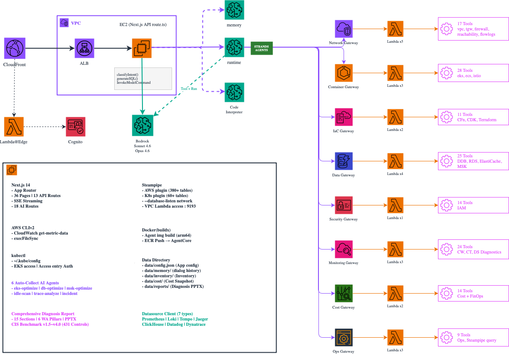

Architecture Deep Dive
AWSops 기술 아키텍처
Overall Architecture

CDK Infrastructure-as-Code
infra-cdk/ 구조
- awsops-stack.ts — VPC, EC2, ALB, CloudFront
- cognito-stack.ts — User Pool, Lambda@Edge
cdk deploy한 번에 전체 인프라 생성
네트워크 설계
- VPC — 기존 VPC 사용 또는 자동 생성
- EC2 — Private Subnet (Public IP 없음)
- ALB — Internal, CloudFront Prefix List만 허용
- CloudFront — CACHING_DISABLED (실시간 데이터)
EC2 인스턴스 설정
- t4g.2xlarge (8 vCPU, 32GB, ARM64)
- Steampipe + Next.js + Powerpipe 동시 실행
- IMDSv2 강제 (Hop Limit 2)
- SSM Session Manager 접근 (SSH 불필요)
CloudFront 설정
- X-Custom-Secret 헤더로 ALB 원본 검증
- CACHING_DISABLED 정책 (실시간 데이터)
- Lambda@Edge Python 3.12 (us-east-1)
Data Layer: Steampipe
Steampipe — SQL for Cloud APIs
- Embedded PostgreSQL — 포트 9193, AWS API를 SQL 테이블로 변환
- 380+ AWS Tables — EC2, S3, RDS, Lambda, IAM, VPC, CloudFront, WAF
- 60+ K8s Tables — Pod, Deployment, Service, Node, RBAC, CRD
- FDW Plugin — aws, kubernetes, trivy 플러그인 확장
SELECT * FROM aws_ec2_instance WHERE instance_state = 'running'
pg Pool — Connection & Cache
| max connections | 5 (Steampipe 동시 연결 제한 준수) |
| statement_timeout | 120초 (장시간 쿼리 방지) |
| batchQuery | 5개 순차 실행 (동시 연결 풀 보호) |
| node-cache TTL | 5분 (메모리 캐시, accountId 접두사 키) |
| cache-warmer | 4분 주기, 대시보드 23 + 모니터링 10 쿼리 프리워밍 |
Multi-Account — Aggregator Pattern
aws— 모든 계정 통합 조회aws_{accountId}— 개별 계정 조회- buildSearchPath() — 동적 search_path 생성
- config.json — 코드 수정 없이 계정 추가/제거
- Per-Account Cache — 계정별 캐시 키 분리
SET search_path TO public, aws_123456789012, kubernetes;
660x Faster — pg Pool vs CLI
Steampipe CLI ❌
- 매번 프로세스 시작
- 플러그인 로드
- 연결 수립
- ~660ms per query
pg Pool ✅
- 이미 떠있는 PostgreSQL
- 커넥션 풀 재사용
- SQL 직접 전송
- ~1ms per query
AI Engine: Bedrock AgentCore
AgentCore Runtime
- Strands Agent — Python 에이전트 프레임워크
- Docker ARM64 — EC2에서 빌드, ECR → AgentCore 관리형 실행
- Bedrock Claude — Sonnet 4.6 (분류) + Opus 4.6 (분석)
- Memory Store — 365일 대화 이력 (사용자별 분리)
- Code Interpreter — Python 샌드박스
8 MCP Gateways — 142 Tools
| Gateway | Tools | 주요 기능 |
|---|---|---|
| Network | 17 | VPC, TGW, Reachability |
| Container | 28 | EKS, ECS, Istio |
| IaC | 11 | CDK, CFn, Terraform |
| Data | 25 | DDB, RDS, ElastiCache, MSK |
| Security | 14 | IAM |
| Monitoring | 24 | CW, CT, DS Diagnostics |
| Cost | 14 | Cost + FinOps |
| Ops | 9 | Docs, CLI, Steampipe |
23 Lambda Functions
- Cross-Account — STS AssumeRole, 50분 캐싱
- Read-Only — 모든 Lambda 읽기 전용
- VPC Lambda — Steampipe 직접 접근 (pg8000)
- Python 3.12 — boto3 + cross_account.py 공통 모듈
AI Route Classification
분류 흐름 — ROUTE_REGISTRY
- User Question — 자연어 질문 (한국어/영어)
- Sonnet 4.6 Classifier — 18 Routes에서 1~3개 선택
- Handler Dispatch — 5가지 핸들러로 실행
- SSE Streaming — 실시간 응답 + Tool 사용 표시
ROUTE_REGISTRY 단일 소스 — 라우트 추가 시 분류/UI/매핑 자동 반영
5 Handler Types
| Handler | 동작 |
|---|---|
| auto-collect | 병렬 데이터 수집 + Bedrock 분석 |
| sql | Steampipe SQL 생성 → 실행 |
| datasource | PromQL / LogQL / TraceQL 생성 |
| code | Python Code Interpreter |
| gateway | MCP Gateway 도구 호출 (142개) |
6 Auto-Collect Agents
- eks-optimize — EKS container rightsizing (Prometheus + K8s + Cost)
- db-optimize — RDS / ElastiCache / OpenSearch rightsizing
- msk-optimize — MSK Kafka broker sizing
- idle-scan — 유휴 리소스 스캔 (6 categories)
- trace-analyze — Tempo/Jaeger 서비스 트레이스 분석
- incident — 멀티소스 인시던트 분석
4-Phase: Detect → Collect → Format → Analyze
Auto-Collect Agents
6 Collectors
| Agent | Target |
|---|---|
| eks-optimize | EKS rightsizing |
| db-optimize | RDS/ElastiCache/OpenSearch |
| msk-optimize | MSK Kafka brokers |
| idle-scan | Unused resources |
| trace-analyze | Distributed traces |
| incident | Multi-source incidents |
4-Phase Architecture
- Detect -- 데이터소스 자동 탐지
- Prometheus, Loki, Tempo, CloudWatch
- Collect -- 병렬 데이터 수집
- PromQL + Steampipe SQL + CloudWatch
- Format -- Bedrock 컨텍스트 포맷팅
formatContext()메서드
- Analyze -- Opus 4.6 심층 분석
analysisPrompt시스템 프롬프트
Collector Interface
interface Collector {
collect(send, accountId?)
formatContext(data)
analysisPrompt: string
displayName: string
}
Datasource Integration
Metrics
- Prometheus — PromQL, auto-discovery, 9+ metric candidates
- Datadog — Metrics Query API v2
- Dynatrace — Entities & Metrics API v2
rate(container_cpu_usage_seconds_total{container!=""}[5m])
Logs
- Loki — LogQL, 에러 로그 검색, 패턴 매칭
- ClickHouse — SQL 데이터 분석, 대용량 로그 처리
{level="error"} |= "timeout" | json
Traces
- Tempo — TraceQL, 분산 트레이스 검색
- Jaeger — Service/Trace API, 서비스 의존성
{ status = error && duration > 500ms }
Unified Datasource Client
- datasource-client.ts — 7가지 타입 통합 인터페이스
- queryDatasource() — 하나의 함수로 모든 DS 쿼리
- Auto-Discovery — URL 등록 → 헬스체크 → 자동 감지
- 60s Cache — node-cache, configurable TTL
- SSRF 방지 — datasourceAllowedNetworks allowlist
Security Architecture
Authentication
JWT Verification
HttpOnly Cookie
→
Network Security
Private Subnet Only
No Public IP
CF Prefix List → ALB SG
X-Custom-Secret Header
→
Access Control
IMDSv2 (Hop Limit 2)
SSM Session Manager
Admin Email List
Per-User Memory
Key Architecture Decisions
Performance
- pg Pool > Steampipe CLI — 660x faster
- node-cache 5min TTL — 대시보드 23 + 모니터링 10 쿼리 프리워밍
- batchQuery (5 seq) — 동시 연결 제한 준수
- cache-warmer — 4분 주기 백그라운드 워밍
AI Model Selection
- Sonnet 4.6 — 라우트 분류 (빠르고 정확)
- Opus 4.6 — 종합진단 리포트 (깊은 분석)
- MetricCandidate — PromQL 자동 탐색 패턴
Resilience
- Graceful Degradation — Prometheus 없으면 Skip
- Cost Probe — MSP 환경 자동 감지
- Snapshot Fallback — Cost API 실패 시 로컬
- Inventory Snapshot — 추가 쿼리 0건 추이
Multi-Account
- config.json — 코드 수정 없이 계정 추가
- Aggregator — 통합/개별 조회 모두 지원
- buildSearchPath() — 동적 search_path
- Per-Account Cache — accountId 접두사
Technology Stack
Application Layer
| Layer | Technology |
|---|---|
| Frontend | Next.js 14 (App Router, Tailwind) |
| Charts | Recharts, React Flow (Topology) |
| Data | Steampipe PostgreSQL (380+ tables) |
| Cache | node-cache 5min TTL, pg Pool |
| Auth | Cognito + Lambda@Edge (Python) |
| Infra | CDK (VPC, EC2, ALB, CloudFront) |
AI & Observability Layer
| Layer | Technology |
|---|---|
| AI Model | Bedrock Sonnet 4.6 / Opus 4.6 |
| AI Runtime | AgentCore (Strands Agent, ARM64) |
| MCP | 8 Gateways × 142 Tools |
| Lambda | 23 functions (Python 3.12) |
| Observability | Prometheus, Loki, Tempo, Jaeger |
| External | ClickHouse, Datadog, Dynatrace |
| Report | PPTX (pptxgenjs) + S3 |
Key Takeaways -- Architecture
- Steampipe pg Pool -- AWS API를 SQL로, CLI 대비 660x 성능
- AgentCore + 8 MCP Gateway -- 142 도구를 전문 영역별로 분리
- Route Registry -- 18 라우트 단일 소스, Sonnet 자동 분류
- Auto-Collect 4-Phase -- Detect → Collect → Format → Analyze
- 7 Datasource Integration -- Prometheus, Loki, Tempo, Jaeger, ClickHouse, Datadog, Dynatrace
- Zero Trust Network -- Private Subnet + CloudFront + Lambda@Edge